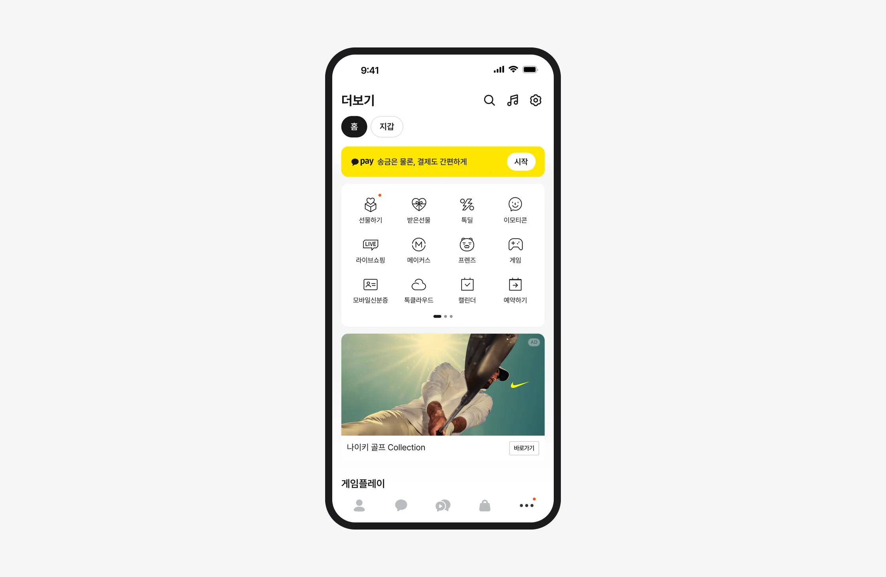
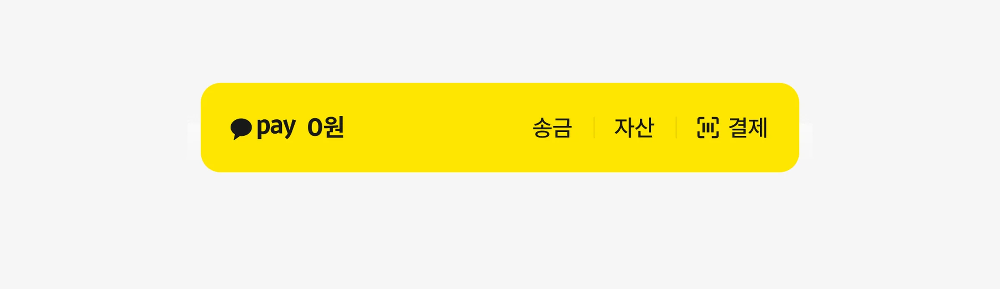
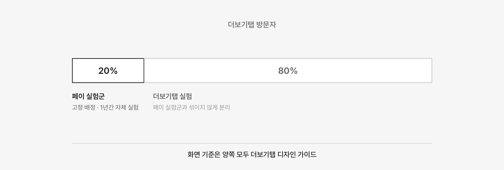
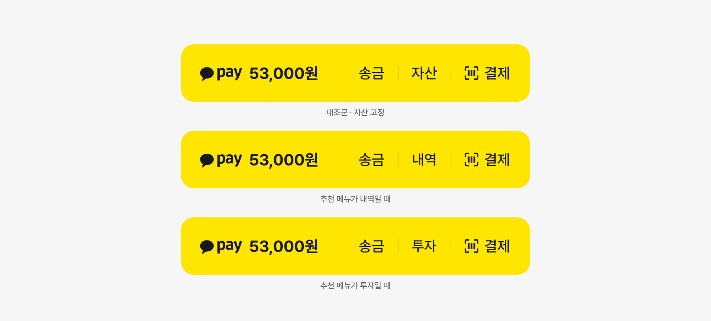
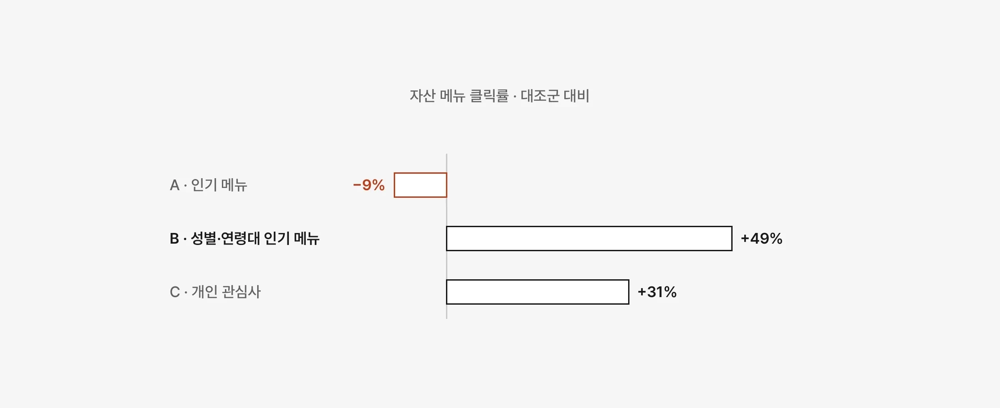
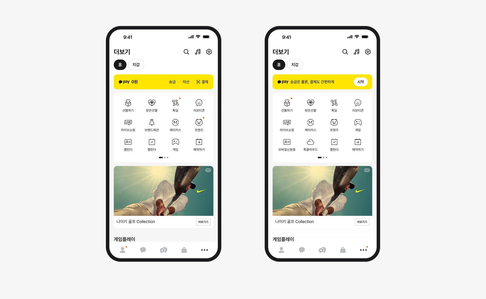
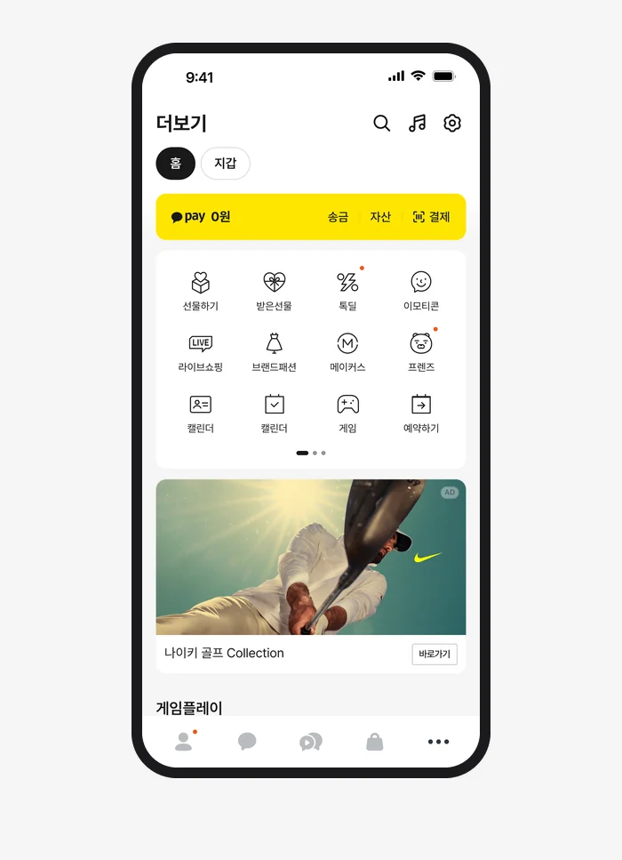
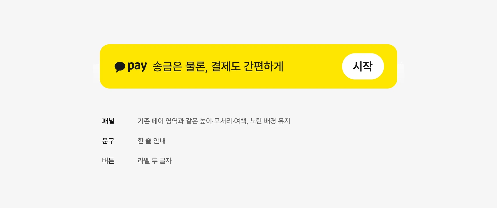
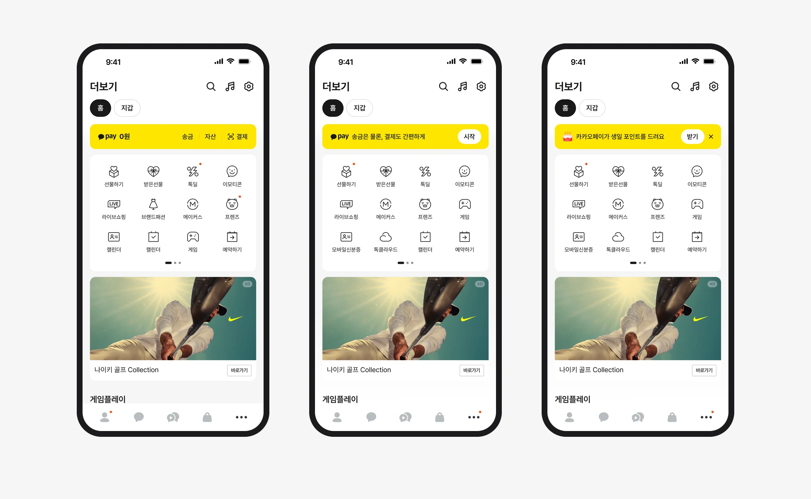
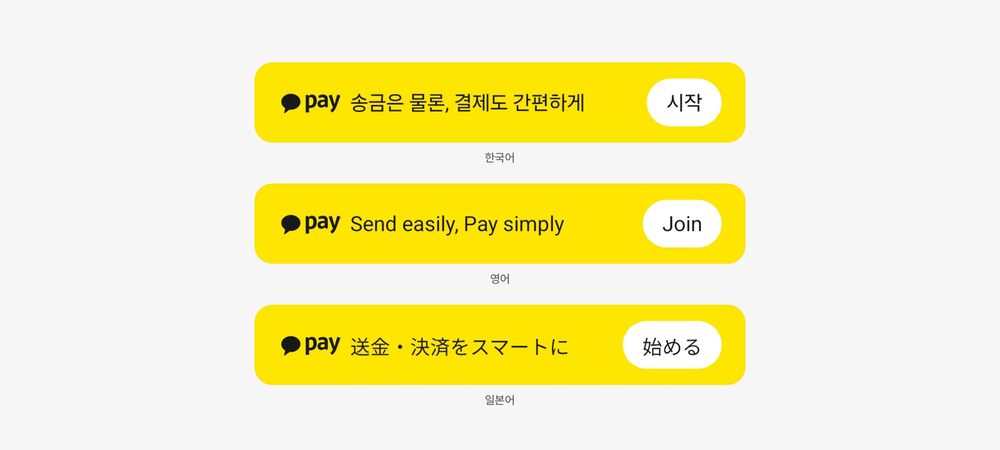

페이 영역 개인화·넛지 실험
더보기탭의 페이 영역을 페이가 직접 실험할 수 있도록 방문자 일부를 떼어 주고, 화면 기준은 더보기탭 디자인 가이드로 지켰습니다. 자산 메뉴 개인화와 미가입자 넛지 두 실험의 결과를 정식 스펙에 옮겼고, 영역을 점유하는 생일 혜택 넛지에는 우려를 냈습니다.

출발점
미가입자에게도 페이 영역은 잔액 0원만 보여줬습니다
더보기탭 방문자의 20%는 페이 미가입자였지만, 이들에게도 페이 영역은 가입자와 같은 모양으로 잔액 0원만 보여줬습니다. 자산 메뉴로 들어가는 비율도 전체의 5% 수준이었습니다.
페이 영역은 앱에 내장된 화면이라, 페이 쪽에서 개선안을 빠르게 실험하기 어려웠습니다.

구조
페이가 직접 실험하고, 화면 기준은 더보기탭 가이드로 묶었습니다
방문자의 20%를 페이 실험군으로 고정해 페이가 1년간 자체 실험을 할 수 있게 하고, 나머지 80%는 더보기탭 실험과 섞이지 않게 나눴습니다.
페이 쪽 실험안도 사용자에게는 더보기탭의 한 화면이라, 화면 변경은 더보기탭 디자인 가이드를 따르기로 했습니다. 이 과제의 디자인을 맡아 페이 영역 디자인 가이드를 전달하고, 페이 실험 화면을 가이드 기준으로 검토했습니다.


실험 1
자산 자리를 사용자별 추천 메뉴로 바꾸자 클릭률이 올랐습니다
송금과 결제는 그대로 두고, 가운데 자산 자리만 자산·내역·투자 중 사용자에게 맞는 메뉴로 바꿔 보여줬습니다. 어떤 메뉴를 고를지는 추천 방식 세 가지로 나눠 비교했습니다.
성별·연령대별 인기 메뉴를 보여준 B안의 클릭률이 대조군보다 약 49% 높았고, 페이 영역의 다른 지표는 달라지지 않았습니다. B안의 추천 메뉴 중 클릭률이 가장 높았던 것은 내역이었습니다.


실험 2
미가입자에게는 잔액 대신 가입 안내를 보여줬습니다
잔액 0원 자리에 ‘송금은 물론, 결제도 간편하게’라는 안내와 시작 버튼을 넣는 실험안을 디자인 시스템 관점에서 검토했습니다.
클릭률은 대조군보다 약 8% 높았지만 오차 범위 안이었습니다. 그래도 페이를 처음 보는 사용자에게 무엇을 할 수 있는지 알려준다는 가치가 있어 적용하기로 했습니다.

패널 규칙
넛지 패널이 페이 영역의 틀을 넘지 않게 규칙을 정했습니다
정식 적용에 앞서 넛지 패널의 디자인 가이드를 만들었습니다. 패널은 기존 페이 영역과 같은 높이와 모서리, 여백을 쓰고, 안내 문구는 한 줄, 버튼 라벨은 두 글자로 제한했습니다.
노란 배경을 그대로 유지해 테마와 다크 모드까지 대응 범위가 넓어지지 않게 했습니다.

검토
화면을 점유하는 생일 혜택 넛지에는 우려를 냈습니다
세 번째로 제안된 생일 혜택 넛지는 생일 7일 전부터 페이 영역에 혜택 안내와 받기·닫기 버튼을 띄우는 안이었습니다. 디자인 챕터 검토에서 더보기탭에 없던 상호작용이라 별도 검토가 필요하고, 생일 맥락은 앞선 협의에서도 우려를 표한 스펙이라는 의견을 정리했습니다.
페이 영역을 점유하고 미가입자에게 상시 노출하는 방식은 지양해야 한다는 입장을 전했고, 이 실험은 이후 진행되지 않았습니다. 실험과 별개로 페이 영역 자체의 UX를 다시 검토해야 한다는 의견도 디자인 챕터 리뷰에 남겼습니다.

정식화
두 실험 결과를 정식 스펙에 옮기고 세 언어로 검수했습니다
두 실험의 결과는 추가 실험과 별개로 더보기탭 정식 스펙에 먼저 반영했습니다. 정식화 과제의 디자인을 맡아 페이 영역의 화면 구성과 넛지 패널 가이드를 정리했습니다.
Android와 iOS 실제 기기에서 한국어, 영어, 일본어 화면을 19개 항목으로 검수했습니다. iOS는 글자 크기를 키운 경우까지 모두 일치했고, Android는 버튼 라벨 굵기 1건을 보완하도록 전달했습니다.
역할
리드한 것
- 페이 영역 디자인 가이드와 실험 화면 검토
- 미가입자 넛지 디자인 시스템 검토와 패널 규칙
- 생일 혜택 넛지 디자인 챕터 검토와 우려 제기
- 정식화 디자인과 Android·iOS 디자인 QA
함께 한 것
- 실험군 분리 구조 — PM, 서버, 개인정보 검토
- 실험 설계·분석 — 페이
- 정식화 스펙 — PM